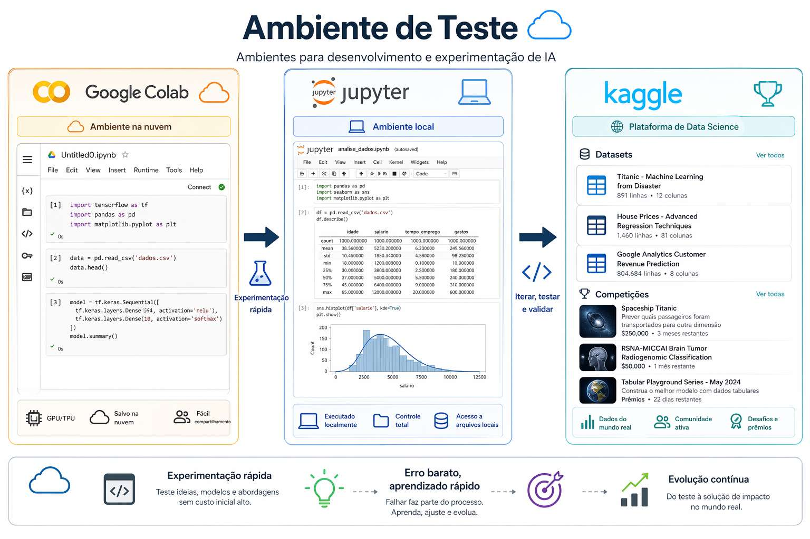
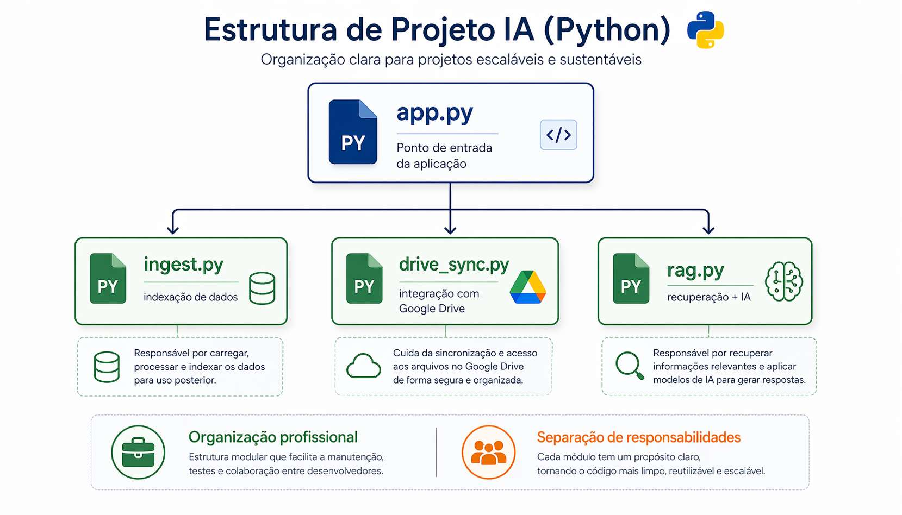
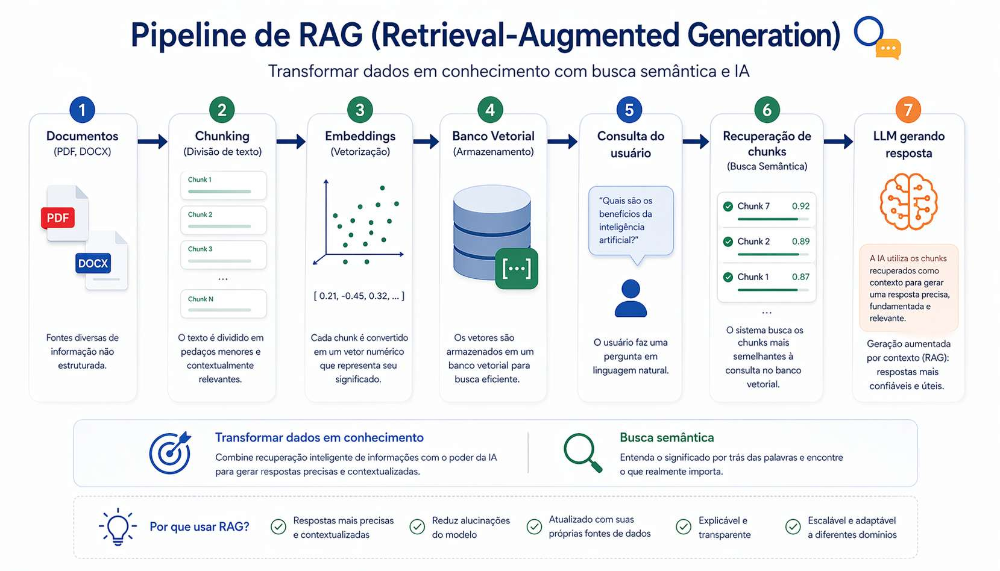
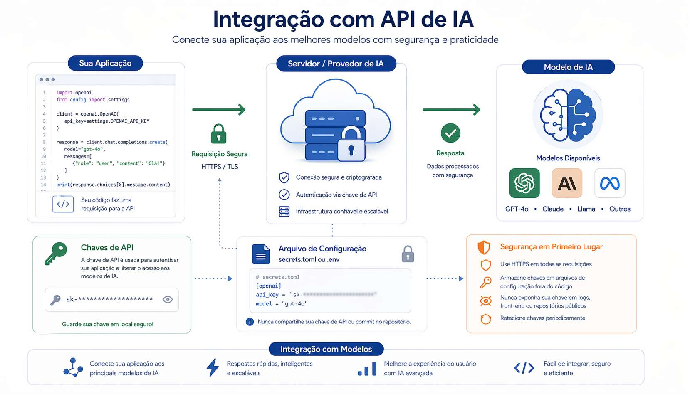
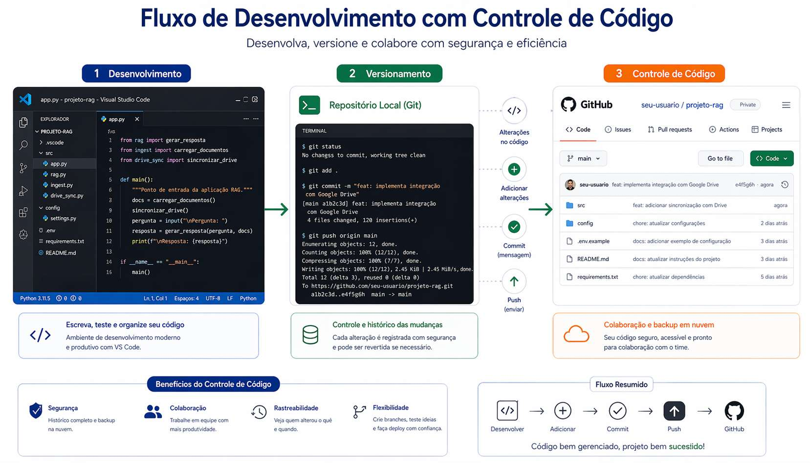
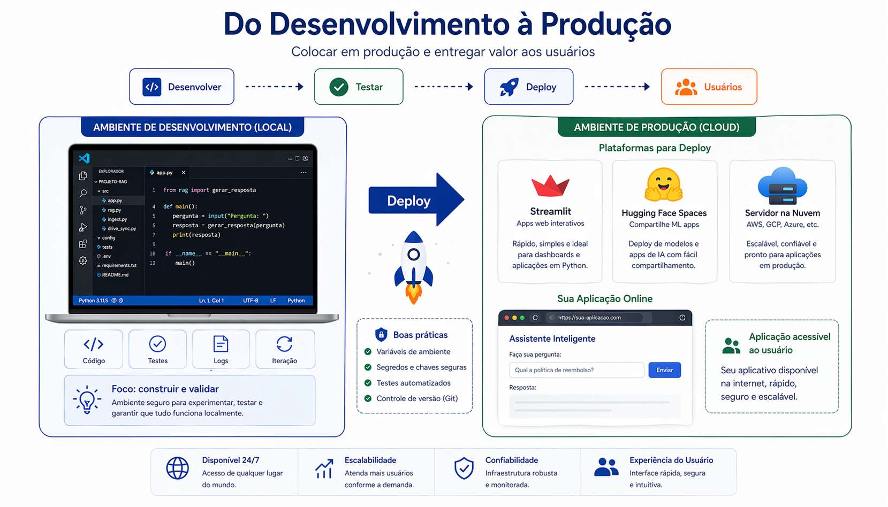
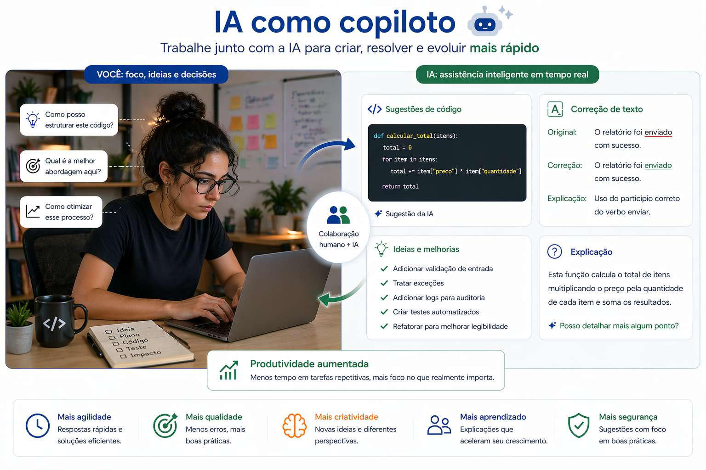
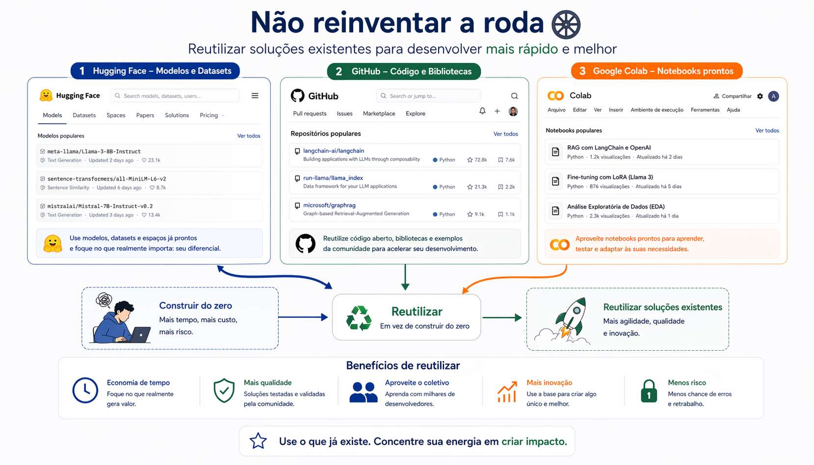
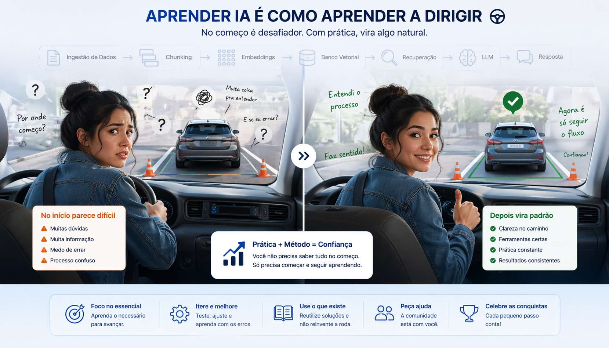
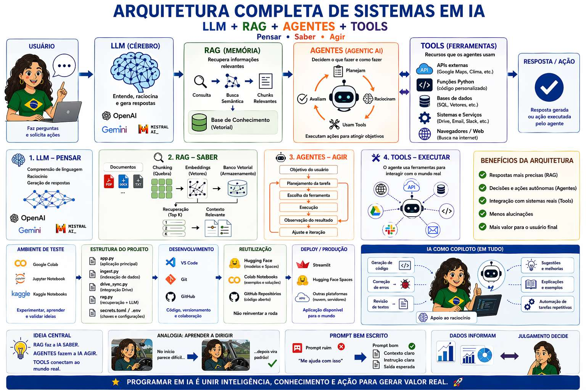

Do ambiente de teste ao deploy em produção
Onde tudo começa. Aqui você erra barato e aprende rápido.

Organização profissional do código.

Transformar documentos em conhecimento pesquisável.

Uso de APIs e modelos.

Ambiente profissional.

Colocar no mundo real.

A IA está em tudo:

Não reinventar roda.

Programar IA é um processo.
No início parece difícil. Depois vira padrão — como dirigir.

A programação em IA moderna não é apenas escrever prompts. Ela envolve modelos de linguagem, recuperação de conhecimento, agentes que tomam decisões e ferramentas que conectam a IA ao mundo real.
